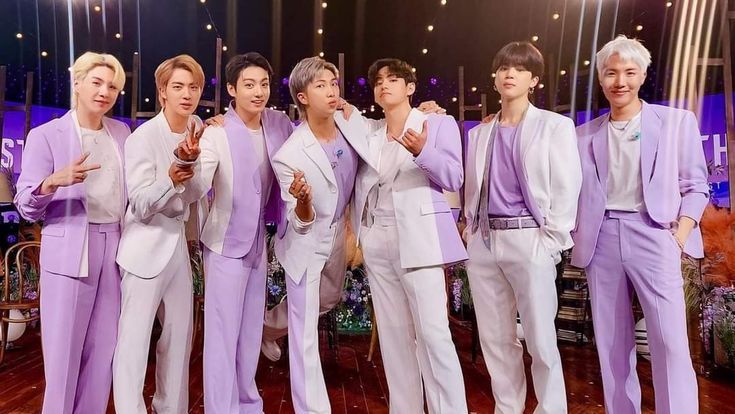
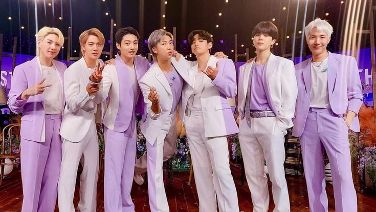
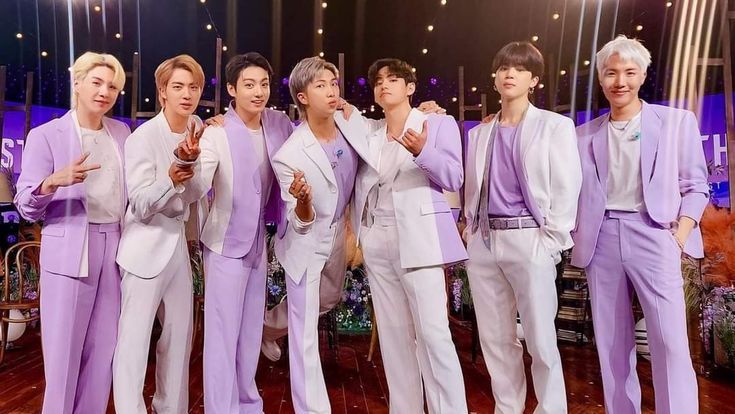

BTS
Me gusta demasiado escuchar musica, en especial de BTS, cualquier cancion de ellos me pone feliz, pero también escucho de todo.
 


Me gusta demasiado escuchar musica, en especial de BTS, cualquier cancion de ellos me pone feliz, pero también escucho de todo.

Una de las principales razones por las cuales me gusta demasiado BTS es
por sus letras y la manera de componer sus canciones, cada una de ellas tiene
un significado distinto y hermoso, lo se porque me aseguro de conocer bien de lo que
trata la canción porque son sentimientos que ellos comparten y me gusta ver esa parte
de ellos.
Sus canciones son una parte importante en la vida de demasiadas personas, me
incluyo ahí, algunas de ellas son:
Algo que caracteriza a este grupo es su personalidad y la manera en la que les gusta ayudar a las personas, los miembros del grupo suelen hacer donaciones a personas que lo necesitan.
Min Yoongi donó 5 mil millones de wones, es decir 3.6 millones de dólares al Hospital Severance para la fundación de este nuevo centro que se llamará: Centro de Tratamiento Min Yoongi. “Sé lo que es sentirse atrapado en uno mismo”, dijo alguna vez Min Yoongi (nombre artistico SUGA), y esa empatía se ha traducido en acciones constantes.
Desde que BTS y su empresa encargada HYBE, formaron el movimiento "Love Myself", han realizado diferentes donaciones en los últimos años. Hasta la fecha, se estima que la agrupación ha donado cerca de 5.900 millones de wones, lo que equivaldría a $4.4 millones de dólares.
BTS se reunió con el presidente Biden para hablar sobre el racismo contra asiáticos en Estados Unidos,
destacando la importancia de la igualdad, la diversidad y el poder de la música para unir a las personas.
“No hay nada de malo en ser diferente. Creo que la igualdad comienza cuando nos abrimos y aceptamos
nuestras diferencias” - Suga.
“Creemos que la música siempre impulsa y es una magnífica manera de unir todo.
No está mal ser diferente y es momento de aceptar nuestras diferencias”. - BTS
BTS comparte cómo enfrentaron la soledad y la incertidumbre durante la pandemia,
encontrando fuerza en la música, la amistad y el amor propio. Destacan la importancia de
confiar en ellos mismos, apoyarse mutuamente y transmitir esperanza a los demás. Aunque el
futuro sea incierto, recuerdan que siempre hay luz y razones para seguir soñando y viviendo.
“No importa quién eres, de dónde eres, tu color de piel, tu identidad de género, simplemente
habla por tí mismo. Encuentra tu nombre y tu voz por hablar por ti mismo”- Kim Namjoon.